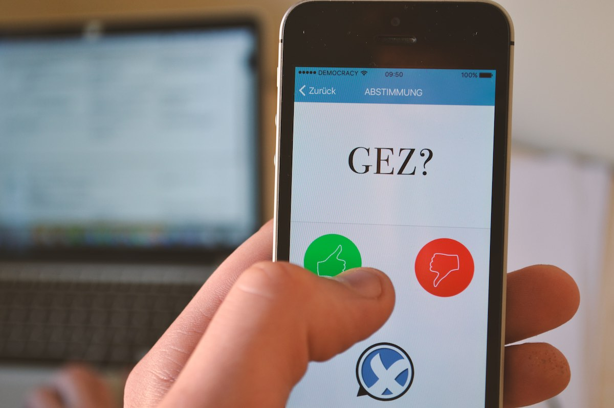

<!-- single -->
<div class="single">
  <div class="container">
    <div class="agileits-single-img">
      
      
      <h4>Der Rundfunkbeitrag ist in der Bundesrepublik Deutschland das gegenwärtige Modell zur Finanzierung der öffentlich-rechtlichen Rundfunkanstalten. Stimme darüber ab, wie die Mittel daraus verwendet werden sollen.</h4>
      
      <div class="agileinfo-single-icons">
        <ul>
          <li><a href="#"><i class="fa fa-user" aria-hidden="true"></i><span>Marius Krüger</span></a></li>
          <li><i class="fa fa-calendar" aria-hidden="true"></i><span>07.Nov.2017</span></li>
        </ul>
      </div>
      
      <p>Der Rundfunkbeitrag ist in der Bundesrepublik Deutschland das gegenwärtige Modell zur Finanzierung der öffentlich-rechtlichen Rundfunkanstalten. Eingezogen wird er durch den sogenannten ARD ZDF Deutschlandradio Beitragsservice. Das jährliche Beitragsaufkommen misst 7,978 Milliarden Euro. Doch wer entscheidet eigentlich, welche Fernseh- und Radiosender respektive Onlineplattformen von diesem Geld finanziert werden?</p>
      <p>Ist die Verteilung transparant und demokratisch? Gerade vor dem Hintergrund, dass Berichte der geförderten Anstalten immer wieder sachliche Fehler, teilweise sogar grobe Unwahrheiten enthalten, ist die GEZ-Gebühr bei informierten BürgerInnen sehr umstritten. Dennoch wird die Beitragseinnahme juristisch durchgesetzt. Und doch gäbe es <a href="https://rundfunk-mitbestimmen.de">Modelle, den Rundfunk mitzubestimmen</a></p>
      
      <h5>Warum also nicht dafür einsetzen, dass wir alle den Rundfunk mitbestimmen können. Mit DEMOCRACY wird diese Abstimmung möglich.</h5>
      <p>Denn DEMOCRACY ist der großangelegte Versuch, unsere Bürgerinteressen deutlich und pragmatisch gegenüber unseren Abgeordneten zu vertreten. Eine gemeinnützige Plattform aufbauen, die alle Bürgerinnen und Bürger, unabhängig von Ort, Zeit und Alter zu diesem Zweck verbindet?</p>
      <p>Technisch gesehen, haben wir dazu alle Möglichkeiten in der Hand.<br>
        Die App DEMOCRACY ist der Vorschlag, diese zu nutzen.<br>
        Entscheide DU.</p>
      
      <a href="http://startnext.com/democracy" class="call_to_action">
        Unterstütze unser Projekt auf<br>
        
      </a>
      
    </div>
  </div>
</div>
<!-- //single -->
